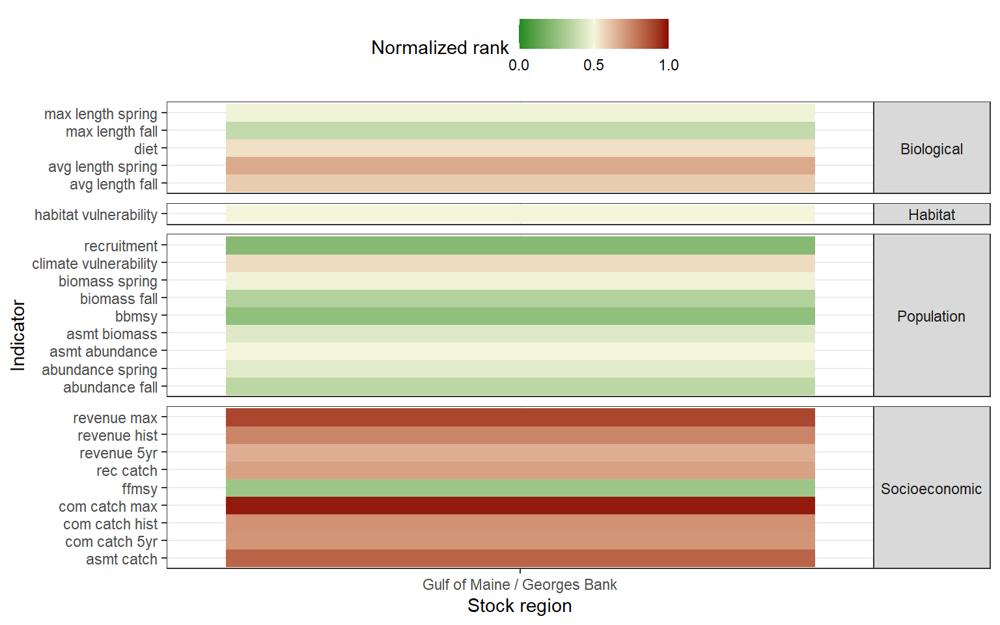

1.2 Preliminary risk visualization
1.2.1 Relative to all other stocks
Risk was calculated over time for all indicators that were documented for five or more species in a given year. Risk was calculated as the average of the past 5 years, as a percent of the historical average. The normalized risk value plotted here reflects the normalized rank of this stock compared to all other stocks in that year.
Comprehensive risk assessment

(#fig:comp_risk_plot)Acadian redfish
Ranked value as percent of historical value by year

(#fig:year_risk_hist)Acadian redfish
Ranked value in each year

(#fig:year_risk_value)Acadian redfish
1.2.2 Within a single stock
For each stock, a five-year running mean was calculated for each indicator. Indicator values were then ranked for all years where a value was present. The normalized risk values plotted here reflects the normalized rank of each year compared to all other years.

(#fig:stock_risk)Acadian redfish